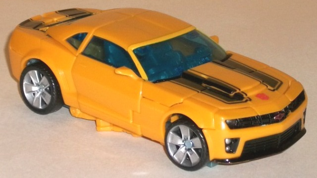
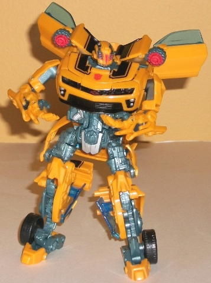
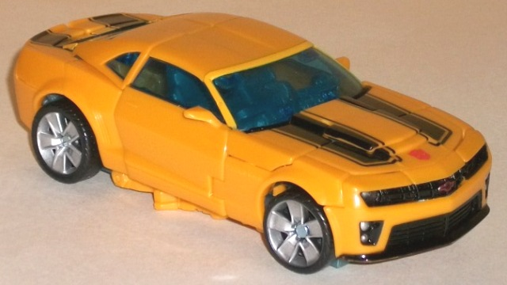
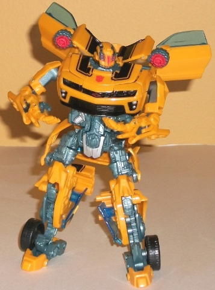
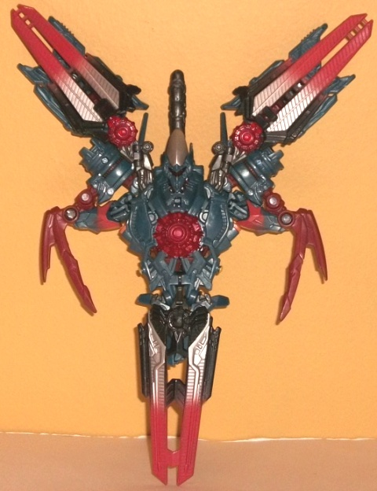
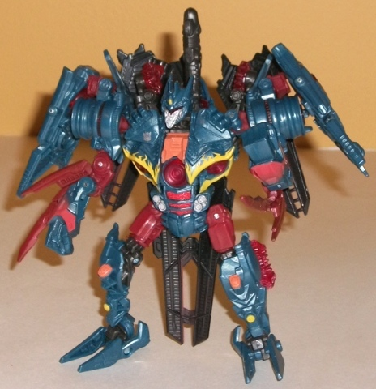

 
Allegiance : Autobot
Size : Deluxe
Difficulty of Transformation: Medium
Color Scheme : "Cheese" yellow, dull grayish blue, and some black, silver, light red, and transparent blue
Individual Rating : 8.3
 N.E.S.T.
Global Alliance Vs. Pack
N.E.S.T.
Global Alliance Vs. Pack
Price:
$20 U.S.
Comes with
: N.E.S.T. Global Alliance
iron-on patch, (and in the U.S.) mail-in form for exclusive Recon Ravage
w/ additional proofs of purchase
Overall Rating
: 8.0
(NOTE: Because this set is composed of repaints,
this is not a full-blown review. This mainly covers any changes made to
the set and the color scheme, and merely compares it to the original versions
of these molds. For a review on RotF Cannon Bumblebee, the mold used for
Battlefield Bumblebee, go
here
. For a review
the original RotF deluxe Soundwave, go
here
.)
 Bumblebee
(Battlefield)
Bumblebee
(Battlefield)


Allegiance
: Autobot
Size
: Deluxe
Difficulty of Transformation:
Medium
Color Scheme
: "Cheese" yellow, dull
grayish blue, and some black, silver, light red, and transparent blue
Individual Rating
: 8.3
Battlefield Bumblebee doesn't even qualify as a repaint. He's the EXACT same as the later releases of Cannon Bumblebee with the clear blue windows, except for a few minor changes. First, the front of his shoulder cannons are painted red (whee?); there's a few VERY minor paint changes, like the Autobot symbol is not on the front of the hood as opposed to the side, and his crotch is painted silver instead of metallic blue. Also, his head mold has been changed to the one used on the Premium version of Bumblebee, which looks a little small on this mold. Eh.
Soundwave
(Infiltration)


Allegiance
: Decepticon
Size
: Deluxe
Difficulty of Transformation
:
Easy
Color Scheme
: Dark navy blue, dull
dark fuchsia, silver, transparent cherry red, black, and some moderately
light red, light orange, and yellow
Individual Rating
: 7.6
Infiltration Soundwave
is a bit of an homage to his
G1 self
in
terms of color scheme, but he's got some originality in there as well.
He's got a similar (and very attractive) shade of navy blue, being ever-so-slightly
lighter in coloration than his G1 toy, and some black, but a secondary
color in there is another nice shade of fuschia-ish red, which contrasts
quite well with the blue. Soundwave does have some of his G1 silver here
and there too, as well as some really wicked-looking yellow "electric"
paint apps around his robot chest, which really just pop. Add in some other
nice colors like a bit of light orange, light red "re-entry burn" paint
apps on his wings and his transparent red plastic, and Infiltration Soundwave
just looks really attractive to the eye as a whole package.
No mold changes have
been made to Infiltration Soundwave.
The N.E.S.T. Global Alliance versus pack isn't exactly the best introduction to the subline, being both repaints, but even considering that it's a somewhat mixed bag, particularly if you've got the prior versions of either of these toys. Infiltration Soundwave has a fantastic new color scheme, but his mold is unfortunately mediocre. Battlefield Bumblebee is a bit better of a mold, but he isn't different from the mold's previous release in any meaningful way. If you don't have either of the previous versions of these molds, this is a mildly recommended set. If you DO have these molds already-- particularly if you already have Bumblebee (which, let's face it, is extremely likely at this point)-- I'd only recommend you pick up this set either at a hefty discount or if you just HAVE to have that Recon Ravage (as purchasing this set is the only way you can get it in the U.S.)
Review by Beastbot